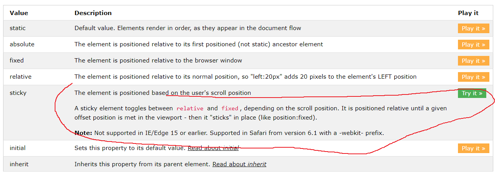

Více o property position
static
Výchozí možnost, takže pokaždé, když neupravujeme, je tam tohle. Zobrazeno v pořadí v jakém je to v .html souboru.
absolute
Jak název napovídá, je umístěn relativně (lol) k prvnímu umístěnému předkovi (tj. nestatickému)
fixed
Prvek je zobrazen relativně k oknu prohlížeče
relative
Je umístěn relativně ke své výchozí pozici
sticky
Přepíná mezi relative a fixed.
Tabulčička

Testovací plocha
Úžasná testovací stránka s příklady
Úkoly
Vztahovací paragraf
- Vytvoř paragraf(nebo cokoliv dle chuti), tak aby byl vždy vpravo dole okna prohlížeče
- Umísti tento seznam reltivně k 'Vztahovacímu paragrafu'
- Vytvoř paragraf(/něco) a umísti to pomocí position absolute, jako přímého potomka body
ukol1
ahoj já
Odkazy
Předchozí část
hlavní stránka
Další část - neexistuje
Další zdroje